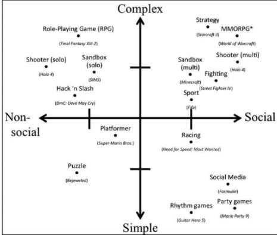

Information for Kids and Adolescents
As a kid or adolescent, you may be thinking about playing video games. To see if a video game will be right for you, see the pros and cons to each game; just because a friend is playing it, doesn’t mean you should too. There may be some peer-pressure to play video games and you might think there is no risk since it is not real life it is just a game but there are factors to consider. There is still an ongoing debate today about whether or not video games are good or bad for kids and adolescents because so many different studies say different things (Ferguson & Wang, 2019). Everyone is different so video games will impact you different than a friend. The most important information to take from this page is to know that lots of things in this world have good and bad factors to it; the key to video games is to monitor your behaviour. If you think your behaviour is getting worse such as you are getting in fights at school over small things after playing a violent video game, try stopping play that game and try a prosocial game where it teaches you to work with others. Playing prosocial video games can help you reduce aggressive behavior (Liu et. Al 2015)!
Video games can be used for many reasons such as to have fun, play with friends/make new friends, calm down/relax, let out angry, etc. If you are noticing video games are making you angry because you keep losing or the game sends out a bad message, consider switching to a different game! It is a smart idea to do some research to see what certain video games can help out with. For example, did you know that “by playing video games and advancing to the more complex challenges in the later stages of games, kids learn many skills including problem solving, strategy, pattern recognition, and multitasking” (Harton, 2016)?!
Playing prosocial video games can help reduce aggressive behavior which is a great benefit but if you are already aggressive person, playing violent games may further make you more aggressive so perhaps try a game where more prosocial behaviors are accepted (Liu et. Al 2015). For example, in Super Mario Sunshine where there is still some violence, but the bigger picture is helping others. So, consider a prosocial video game if you want to work on anger and have fun at the same time!
When looking to buy a video game, it is important to make sure that you meet the age requirement as they may be some mature subject matter that you should not be seeing. Even if you meet the age requirement, make sure the content will not play a negative effect in your life that is going to influence bad behaviours. For example, if you are already an aggressive person, playing violent video games can make that aggression worse. If you want video games to help your aggression, you can try playing sport video games as it will help take out any pent-up emotions (Halbrook et al., 2019).
Playing video games can impact your social life in a good or bad way. If you play video games during most of your spare time with out playing with others, this can possibly be affecting the way you interact with others in a negative way. If you play video games with other people, whether it is multiplayer or online, this actually helps with social interactions and making friends. If you want to make more friends while playing video games, consider online gaming to meet new people or playing with friends/family.
There are many pros and cons to video games not mentioned so make sure to do your research when looking for a video game, find one that will be just right for you! If you are looking for a simple, complex, social, or non-social game, take a look at the picture below to get an idea of some games (Harton 2016). Goodluck!
If you want to see if video games or good or bad for you, check out this YouTube video! https://www.youtube.com/watch?v=_NdlwUs0X3M